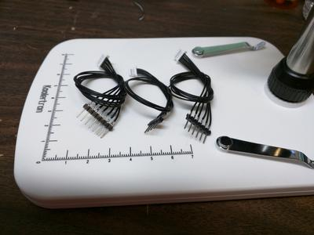
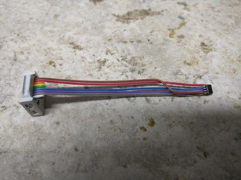

Interesting-ish finds
I found out from a fellow Techlahoman on the slack that those connectors in my last post are JST-SSH. Luckily, Digikey carries both genders of these connectors. They also carry some SSH jumpers that can be hacked up for our purposes. I ended up soldering a 6 pin header onto the board to match the other JST connectors.
I also prepped a few sets of cables with JST "connector housings" on one end and male header pins on the other end.
{kind=link}
In other news, in doing some digging, it appears as though the Cypress CY7C68013 on this board is connected A0-A15 to the flash chip, which has 8 times the address space of the 8051 in the 68013. To that end, they have some GPIO stuck to the highest three bits of the flash.
| U1 | U2 |
|---|---|
| PD5/FD13 | A16 |
| PD6/FD14 | A17 |
| PD7/FD15 | A18 |
The EA pin of the 68013 is also tied strongly to ground, which means it's using the internal 16KB of RAM is being used for code and data. I also found that the I2C bus was connected to a 64KB SOIC flash chip. I hot-aired that off the board and wired it up to some ribbon cable with a 10pin IDC connector on it that fits directly into my BusPirate 3.6.
{kind=link}
Dumping the chip seems to give me 4 copies of the same 16KB of data. I'm not sure if they've programmed it 4 times or if I have the part number wrong and it's only a 16KB flash chip. In either case, I'll be trying to determine what the code is doing.